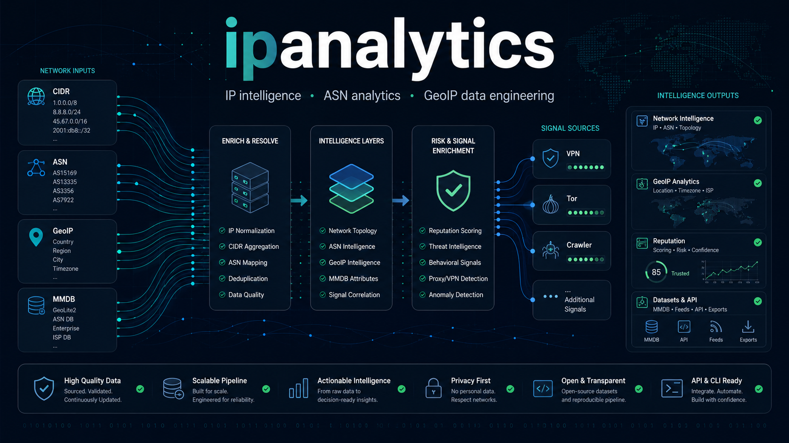

IP and ASN enrichment
Projects are built around CIDR ranges, ASN ownership, hosting and CDN context, RIR and WHOIS metadata, geofeeds, and source-aware enrichment pipelines.
IP intelligence research and data engineering
Open datasets, parsers, dashboards, and automation for IP ranges, ASN metadata, GeoIP databases, VPN infrastructure, Tor exits, crawler networks, and network reputation signals.

ipanalytics focuses on practical IP intelligence systems: collecting public network metadata, normalizing inconsistent provider data, joining ASN and CIDR context, and publishing compact outputs that can support security, abuse, fraud, routing, crawler visibility, and GeoIP quality workflows.
Projects are built around CIDR ranges, ASN ownership, hosting and CDN context, RIR and WHOIS metadata, geofeeds, and source-aware enrichment pipelines.
Research covers VPN, proxy, Tor, hosting, crawler, AI fetcher, cloud, and CDN infrastructure. The goal is better classification without depending on a single opaque feed.
Outputs are designed for dashboards, CSV/JSON pipelines, MMDB processing, reproducible builds, quality checks, and downstream network security workflows.
Research focus
Data formats and stack
Why this work matters
Many IP intelligence feeds are useful but difficult to inspect. The ipanalytics projects prioritize clear inputs, compact outputs, source-aware scoring, and reproducible update paths. That makes datasets easier to review, compare, and integrate into internal systems.
{
"signals": ["asn", "cidr", "geoip", "vpn", "tor", "crawler"],
"outputs": ["csv", "json", "mmdb", "dashboard"],
"principles": [
"source provenance",
"confidence scoring",
"repeatable builds",
"quality checks"
]
}Open to dataset feedback, source suggestions, issue reports, and collaboration around IP intelligence, ASN enrichment, VPN and Tor infrastructure analysis, crawler detection, GeoIP data quality, and network security workflows.